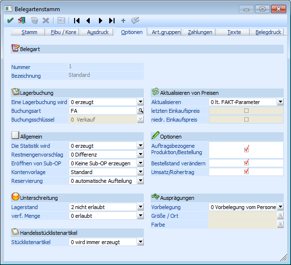

Um eine auftragsbezogene Produktion/Bestellung durchführen zu können, muss dieses in der verwendeten Belegart entsprechend eingestellt worden sein. Die einzustellende Option kann über den Menüpunkt
1 WinLine FAKT
1 Stammdaten
1 Belegstammdaten
1 Belegarten
erreicht werden.

Im Register "Optionen" muss die Checkbox
Ø Auftragsbezogene Produktion/Bestellung
aktiviert sein.
Hinweis
Es handelt sich hierbei nur um eine Einstellung für "auftragsbezogene" Produktion. Sollte nur Lagerproduktion ("Lagerproduktion" bzw. "Bestellung mit Reservierung") erwünscht sein, dann muss dieser Programmbereich nicht bearbeitet werden (die Checkbox bleibt also deaktiviert).
Die Belegart kann nun entweder dynamisch beim Belegerfassen eingetragen, oder fix mit dem Kunden verknüpft werden.
Aus der Steuerung der auftragsbezogenen Produktion beim Artikel und beim Auftrag bzw. Kunden (über die Belegart) lässt sich eine sehr flexible Lösung ableiten. Die Möglichkeiten sind in folgender Tabelle enthalten.
|
|
|
Belegart - Feld "Auftragsbezogene Produktion" ist… | |
|
|
|
aktiv |
nicht aktiv |
|
Artikelstamm - Feld "Prod./Bestellung" ist auf "Auftragsbezogene Produktion/Bestellung"… |
gesetzt |
Aus dem Kundenauftrag wird ein Produktionsprojekt. |
Aus dem Auftrag wird kein Produktionsprojekt, der Auftrag wird über den Einkauf an die Produktion geleitet. |
|
nicht gesetzt |
Aus dem Auftrag wird kein Produktionsprojekt, der Auftrag wird über den Einkauf an die Produktion geleitet. |
Aus dem Auftrag wird kein Produktionsprojekt, der Auftrag wird über den Einkauf an die Produktion geleitet. | |
Beispiel
In einem Auftrag (in der Belegart ist die Option "Auftragsbezogene Produktion" aktiviert) werden mehrere Produktionsartikel erfasst, wobei bei einem Teil der Artikel die Produktionsart auf "auftragsbezogene Produktion/Bestellung" geschlüsselt wurde und bei dem Rest nicht.
In solch einen Fall wird der Auftrag automatisch "geteilt". D.h. ein Teil der Produktionsartikel wird sofort als Produktionsprojekte angelegt und die restlichen Produktionsartikel gelangen über den Weg des Einkaufs in die Produktion.
Diese Vorgangsweise kann z.B. dann gewählt werden, wenn der Auftrag verschieden wichtige Produktionsgüter enthält.